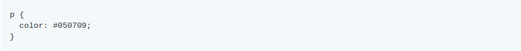

Através do Sass é possível realizar os seguintes tipos de operações: operações numéricas, operações com cores e operações com strings. A seguir veremos detalhadamente cada tipo de operação.
Sass suporta os seguintes tipos de operações:
Ao realizar as operações, o Sass preserva unidades, ou seja, não é possível trabalhar em números com unidades incompatíveis e dois números com a mesma unidade que são multiplicados juntos produzirão unidades quadradas (10px * 10px == 100px * px). Esteja ciente de que px * px é uma unidade inválida no CSS, e você obterá um erro do Sass para tentar usar unidades inválidas no CSS.
O sinal "-" pode significar muitas coisas em CSS e em Sass:
Na maioria das vezes, está claro qual é qual, mas existem algumas boas práticas para assegurar a utilização correta do - :
Os diferentes significados de - têm prioridade na seguinte ordem:
No CSS é possível utilizar / como uma maneira de separar os números, como o Sass é uma extensão do CSS, também é possível realizar este tipo de declaração, só que ao mesmo tempo, é possível que o / seja utilizado para a divisão. A seguir serão apresentadas as três situações onde o / é interpretado como divisão.
Exemplos de utilização do / :
Será compilado para:
O operador módulo é o %, como na maioria das linguagens.
Exemplo:
Será compilado para:
Todas as operações aritméticas são suportadas para valores de cor (hexadecimal, rgb e rgba), onde trabalham por partes.
Exemplo:
Adição
01 + 04 = 05, 02 + 05 = 07 e 03 + 06 = 09
Será compilado para:
Multiplicação
01 * 2 = 02, 02 * 2 = 04, and 03 * 2 = 06
Será compilado para:
RGBA
Será compilado para:
O sinal de + pode ser utilizado para concatenar strings.
Exemplos:
Será compilado para:
A concatenação pode ser realizada com strings entre aspas ou sem aspas, o resultado é sempre uma string.
Será compilado para:
Dentro de uma string, a interpolação pode ser utilizada para incluir valores dinâmicos dentro da string:
Será compilado para:
Null é tratado como uma string vazia dentro da interpolação.
Será compilado para:
Os operadores relacionais (<,>, <=,> =) são suportados para todos os números. Os operadores de igualdade (==,! =) são suportados para todos os tipos.